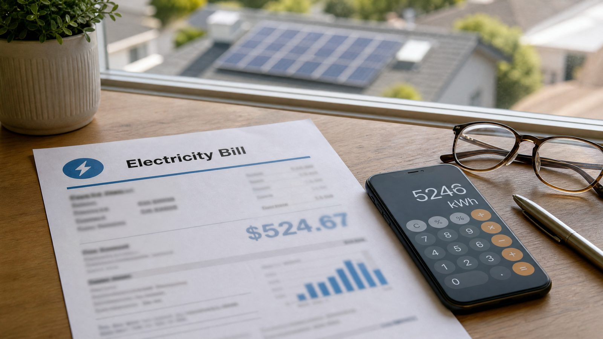

Almost everyone who asks us "how many solar panels do I need?" has the answer sitting in their own home, on a piece of paper they've been throwing away. Your electricity bill — whether it's a JEPCO bill in Amman, an IDECO bill in Irbid, or a utility statement in the US — contains your actual consumption history, and that history is the only honest starting point for sizing a system. Guess from appliance lists and you'll oversize; guess from one summer bill and you'll undersize. Guess from the bill, and the sizing follows the math.
This guide walks through exactly what to extract from your bill, what the different charges mean (because not all of them disappear with solar), and how to hand those numbers to our calculators. It takes about ten minutes with your last twelve bills.
The one number that matters: your kWh usage
Somewhere near the top of the bill is a figure measured in kilowatt-hours (kWh) — sometimes labelled "consumption", "units used", "energy used", or "reading difference". If your bill doesn't show it directly, two meter readings are printed: the current reading and the previous reading. Subtract the previous from the current and you have your usage for that billing period:
kWh used = current meter reading − previous meter reading
This number is what the panel calculator asks for as "monthly electricity usage" — one input, and the whole sizing chain starts moving. If your bill covers 45 days instead of 30, divide the kWh by 45 and multiply by 30 to normalize it to a monthly figure before entering it.
Fixed charges vs variable tariff: why it changes your savings
The total amount due is made of two different animals, and understanding the split is the difference between a realistic and a dreamy payback estimate:
| Charge type | What it is | Does solar remove it? |
|---|---|---|
| Fixed charges | Meter fee, service fee, taxes, government surcharges | No — you still pay them, usually at a reduced rate |
| Variable tariff | Price per kWh consumed, sometimes in rising tiers | Yes — this is what solar offsets |
When you calculate payback with the ROI calculator, the honest input is your annual electricity cost minus the fixed charges — that's the real yearly saving solar can deliver. A system sized against the full bill total will appear to save less than promised, and it wasn't the system that failed: it was the input.
Tiered tariffs: the hidden multiplier
Many utilities — and Jordan's residential tariff in particular — charge by rising tiers: the first block of kWh is cheap, and each block above it costs more. This changes the sizing logic in an important way. If you consume 1,400 kWh in a two-month Jordanian billing cycle, you don't pay one flat rate — part of your usage is billed at the lower tiers and the last chunk at the top tier, which is several times higher.
The practical consequence: solar is worth more to high consumers than the average tariff suggests, because the kWh you offset first are your most expensive ones. Conversely, if you're a small consumer sitting entirely in the cheap first tier, the payback is longer and it's worth checking whether a smaller system (or net metering) fits better. Knowing which tier you sit in — readable directly from your bill's tariff section — is therefore a sizing input, not fine print.
Why you need twelve months, not one
Electricity usage is not flat. In Jordan, a household that uses 450 kWh in April can hit 900–1,200 kWh in August as the air conditioning works — and heaters push winter usage up again. In the US, the pattern flips by region: cooling spikes in the south, heating in the north.
Designing from one bill gives you a snapshot, not a system. Gather twelve bills (or twelve online statements) and build a simple table:
| Month | kWh | Bill amount |
|---|---|---|
| …(fill from your bills) | — | — |
| Annual total | Σ kWh | Σ cost |
| Monthly average (÷12) | Σ kWh ÷ 12 | — |
Two numbers come out of that table: your annual kWh (the sizing input) and your peak month (the sanity check). A well-designed grid-tied system covers roughly 80–100% of the annual total — not the peak month, because oversizing past your annual consumption just exports energy you won't be fully credited for.
Peak vs off-peak meters
If your bill shows two readings — peak and off-peak — you're on a time-of-use (TOU) tariff. Record both. When you size solar, add them together for total kWh; but when you estimate savings, weight the peak portion higher, because that's the expensive energy solar displaces. In Jordan, TOU meters are common for larger consumers and commercial accounts; residential customers mostly see the tiered flat structure described above.
Jordan specifically: reading a JEPCO / IDECO / EDCO bill
For readers in Jordan, the three distribution companies structure bills similarly. The consumption section shows the meter readings and the استهلاك (consumption) in kWh for the billing period — typically two months for residential accounts. Below it, the tariff brackets determine your per-kWh price; you'll see the consumption split across tiers. Fixed items like the meter fee (رسوم العداد) and taxes stay on the bill even after going solar, and under the net metering (صافي القياس) program the balance of generation and consumption settles annually with the utility.
Two practical tips from the field: first, note your meter number and the meter type (digital smart meters report readings directly to the company, so your online account shows the same figures as the paper bill — either works for this exercise). Second, if your bill shows a credit (رصيد) from excess generation under net metering, that credit is real money rolled forward — include it as zero-cost energy when you compute your effective consumption for sizing.
On nearly every project in Ma'an and southern Jordan, the first thing we ask the client for is not a floor plan or a roof photo — it's twelve months of bills. The bills settle the argument before it starts: they show the real consumption, the tier the client sits in, and the seasonal swing. I've seen more than one "3 kW request" turn into a 5 kW design after the summer bills came out, and more than one 5 kW request shrink to 3 kW after the client realized winter consumption was far lower. The bill is always right; the guess rarely is.
From bill to system size: the full chain
With your annual kWh in hand, the path to a system size is four steps:
- Annual kWh ÷ 365 gives your average daily usage.
- Daily usage ÷ peak sun hours (see our guide on peak sun hours by location) gives the required kW of panels — 5.5–6.5 kWh/m²/day equivalent in Jordan, lower in northern Europe.
- Required kW ÷ panel wattage gives your panel count — or just enter the monthly average into the panel calculator and let it do the division, the roof-area check, and the location curve.
- Check against your peak month and inverter limits — the inverter calculator matches the load, and the battery calculator handles backup hours if you're going off-grid or hybrid (off-grid needs the peak month, not the average — see grid-tied vs off-grid vs hybrid).
Finally, feed your annual cost (minus fixed charges) into the ROI calculator to see the payback period for your exact market. Every tool in that chain exists because the bill makes it possible — the bill is the input, the tools are the machinery.
Common bill questions, answered
My bill is in cost, not kWh. Reverse the tariff: divide the variable portion of the bill by your per-kWh price, or — better — read the meter readings directly and subtract. The kWh figure is always recoverable.
My consumption jumped suddenly. Check for seasonal causes (AC season, water heaters), a faulty appliance, or — rarely — a meter issue. Before sizing solar on an anomaly, wait for the pattern to normalize; solar sized on a one-month spike wastes money.
We're a small household with a low bill. Solar may still pay back, but the fixed charges will remain — run the ROI calculator with your real numbers rather than an average, and consider whether a smaller system or a community/net-metering arrangement fits better.
Frequently asked questions
Where on my electricity bill can I find my kWh usage?
Near the top, in the billing period section — look for "consumption", "units used", or "reading difference" in kWh. If only two meter readings appear, subtract the previous from the current reading to get your usage for the period.
Why should I track 12 months of bills before going solar?
Usage swings seasonally — cooling and heating can double consumption compared to mild months. Twelve months reveal your true annual total and your peak month, so the system is sized for reality rather than a single snapshot that could leave you under- or oversized.
What is the difference between fixed charges and variable tariff on my bill?
Fixed charges (meter fees, taxes, service fees) are paid regardless of consumption and remain — usually reduced — even with solar; the variable tariff is the per-kWh price that solar offsets. Size your savings against the variable portion only for an honest payback.
How do I convert my monthly bill into a solar system size?
Average your annual kWh over 12 months, divide by 30 for daily usage, divide by your region's peak sun hours for the required kW of panels, and split by panel wattage for the panel count — or enter the bill figure directly into the SolarToolHub panel calculator.